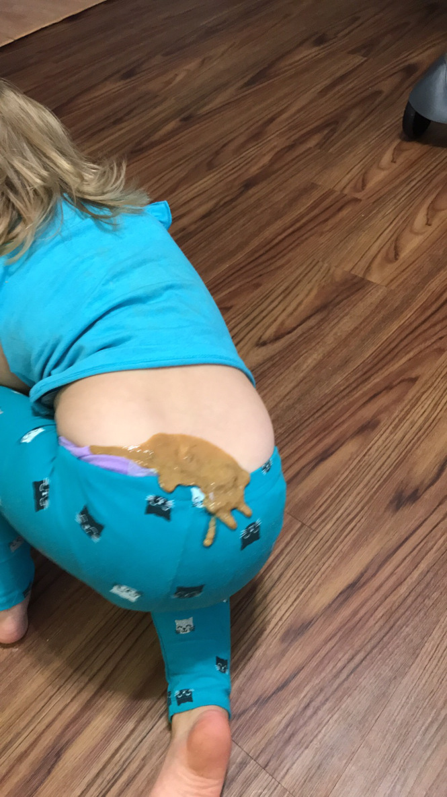

Have you ever heard of an erupting poop? Neither have I, until I witnessed one 😫. Fear… that
is what I felt. It was terrifying! Death stared me right in the face! My heart was pounding; my
stomach was nowhere to be found. It was like an actual volcano of hot Molting lava poop just slowly
squeezing its way up and out of the back of one of my kids diapers. I was frozen! Like all my
mother skills had gone down the drain. The worst part of all, was it didn’t even phase the kid.
They just continued to play like “this is comfortable, this smells nice, let me see what all I can
poop on today?” LIKE OH HELL NO!!! Finally my “momsense ” went away and I frantically said “don’t
you move!!!!”. Trying to run like a crazy person and get all my tactical supplies for the injuries
about to happen when the diaper explodes. I make it back, and I’m like “Peso “ off of “Octonauts”,
wiping, wrapping, spraying, and praying! The kid is finally all clean and in new clothes! I’m
Thanking the lord that everything went smoothly and we all made it out unharmed. Until I looked
down and there was POOP on my hand!!!
True story, kids are gross! Think long and hard if you
want one and if you can deal with getting poop on your hand and be perfectly content with it. Keep
on sharing my stuff and like me on Facebook for more disastrous events! 👍🏼👀
